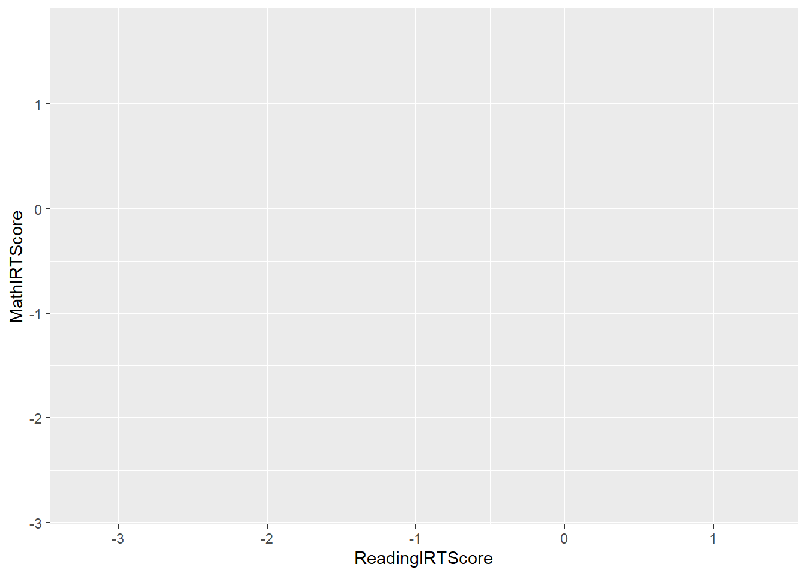
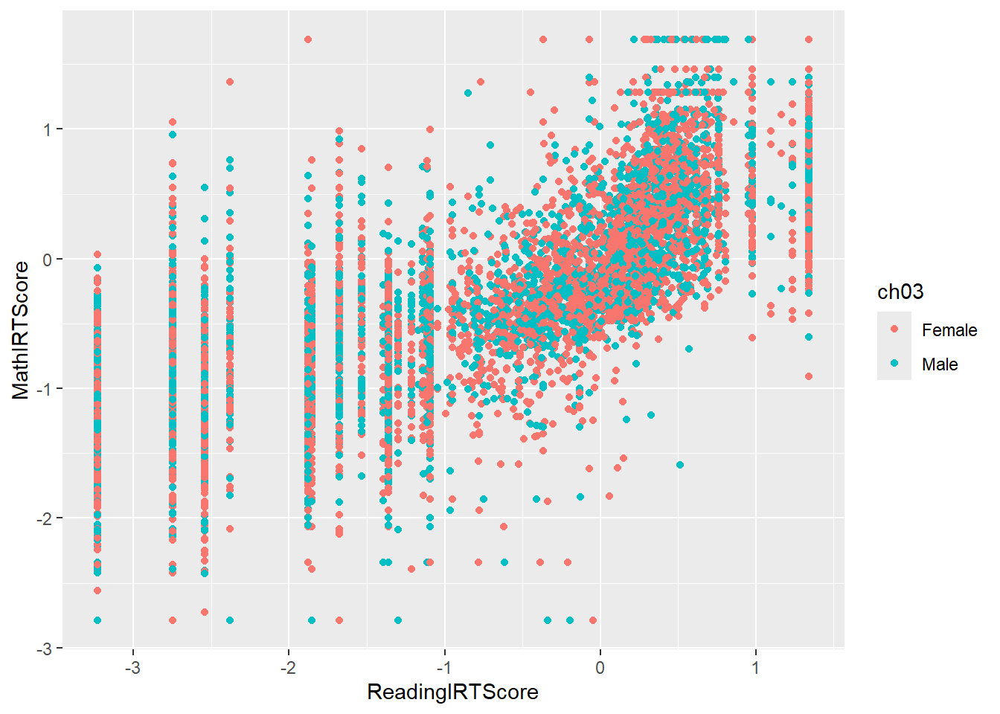
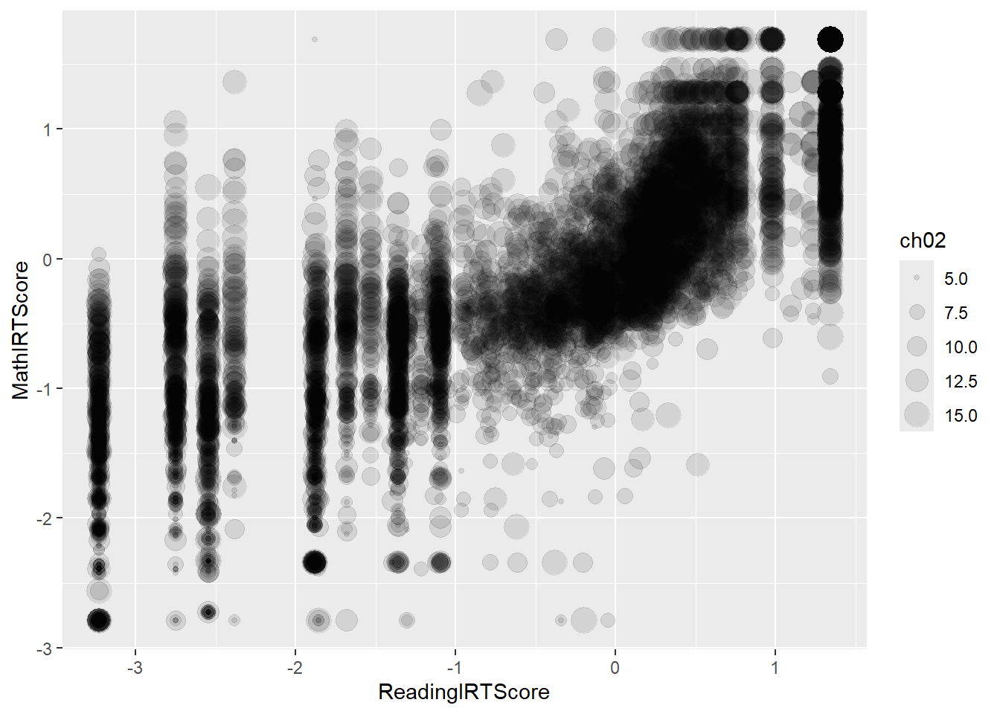
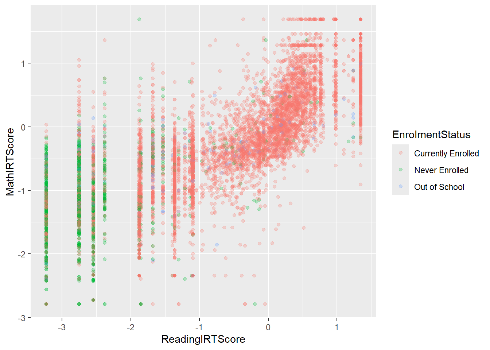
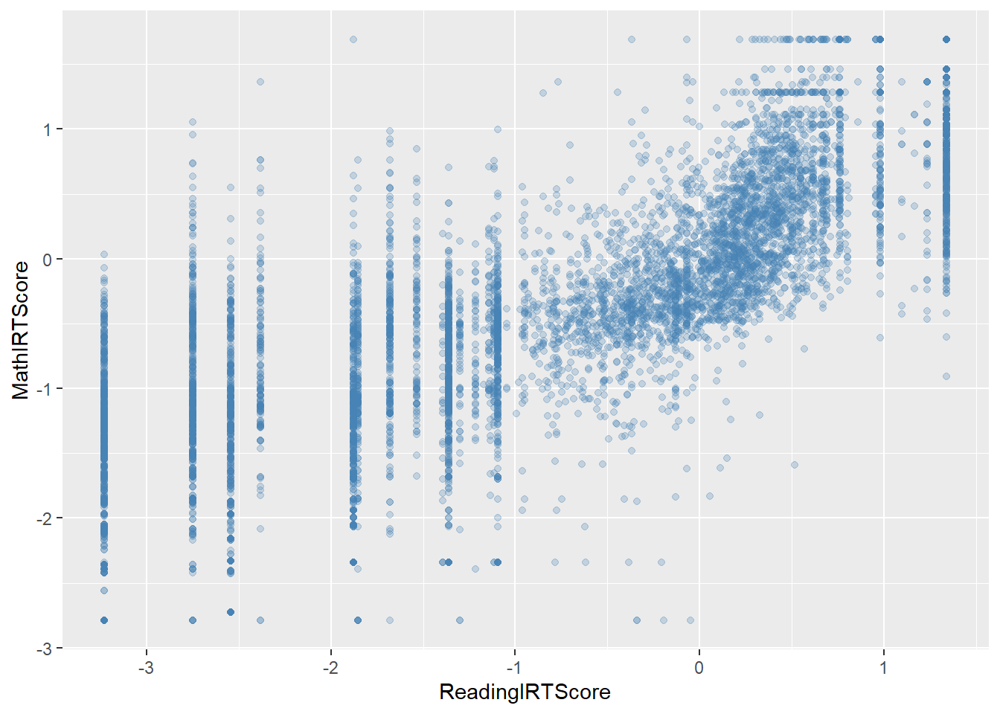
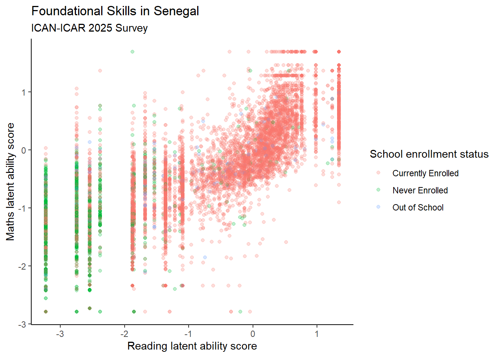

Chapter 4 Intro to ggplot
We’ll use the ICAN-ICAR 2025 survey data with variables such as:
ReadingIRTScore: Child’s reading latent ability scoreMathIRTScore: Child’s maths latent ability scorech02: Child’s agech03: Child’s genderEnrolmentStatus: child’s school enrollment statusch04a: whether the child has eye difficulties
Load the packages and load and prepare the data:
You don’t need to understand all the details of ican-icar-2025-v1 yet.
For now, just remember:
- We’ll be using a data frame called
dat. - Each row is a child.
4.1 What is ggplot2?
ggplot2 is the R package we’ll use to make graphs.
- It’s part of the tidyverse (a family of R packages for data analysis).
- It’s based on the Grammar of Graphics idea.
- Instead of giving you a few pre-made plots, it lets you build plots from simple pieces (layers).
- You can use it effectively without fully understanding the underlying theory (we’ll learn by doing).
In practice, we’ll keep this simple mental model:
To make a plot in ggplot2 we always say:
“Use this data, map these variables to the axes/colour/etc.,
and draw them with this geom (points, bars, lines, …).”
4.1.1 Optional: Grammar of Graphics (background)
If you’re curious about the theory:
- Graphics = distinct layers (data, aesthetic mappings, geoms, …).
- Aesthetic mapping: connect variables in the data (numbers, labels) to what we see (position, colour, size, shape).
Don’t worry if this feels abstract right now; the examples will make it concrete.
4.2 The main pieces of ggplot2
A ggplot2 plot is built from several elements.
For our intro, we only need these three:
- data – the data frame we’re plotting (here:
dat). - aes(…) – aesthetic mappings: how variables map to what we see (x-axis, y-axis, colour, size, shape).
- geom_…() – the geometric object that draws the data (points, lines, bars, etc.).
Later (optional), we can also use:
- stats – automatic summaries (e.g. means, counts, smooth lines).
- scales – axis ranges and colour scales.
- coordinate systems – how axes are drawn.
- facets – small multiples of the same plot.
- themes – fonts, grid lines, background (“non-data ink”).
4.3 Building your first plot: data → aes → geom
We’ll start by plotting household expenditure against household income.
4.3.1 Step 1: Choose the data
First we tell ggplot2 which data frame to use:

This creates a blank plotting area (a coordinate system), but we haven’t told it what to draw yet, so you’ll likely see an empty plot.
4.3.2 Step 2: Map variables with aes()
Next, we say which variables go to which axis using aes():

Read this as:
- Put
ReadingIRTScoreon the x-axis (horizontal). - Put
ch02on the y-axis (vertical).
This still doesn’t draw points — it only defines the mapping.
4.3.3 Step 3: Add a geometry with geom_point()
Now we add a geometry to actually draw the data. For a scatterplot, we use geom_point():
## Warning: Removed 1019 rows containing missing values or values outside the scale range (`geom_point()`).
Think of this as:
“Using data
dat,
put reading score on x, maths score on y,
and draw one point per child.”
This data + aes + geom pattern is the core template you’ll reuse for almost every plot in ggplot2. You can find other geometries that might interest you, i.e., a bar graph is geom_bar(), a line graph is geom_line(), etc. Here, we keep it simple by honing a scatter plot to show many design controls you could attain from ggplot.
4.4 Aesthetics: colour, shape, size
aes() can also control things like colour, shape, and size.
Big idea:
Whatever you put inside
aes(...)is controlled by the data.
For example,aes(colour = ch03)means “use the variablech03to decide the colour of each point”.
We’ll reuse our scatterplot and experiment.
4.4.1 Mapping shape to a variable
ggplot(data = dat,
mapping = aes(x = ReadingIRTScore,
y = MathIRTScore,
shape = ch03)) +
geom_point()## Warning: Removed 1019 rows containing missing values or values outside the scale range (`geom_point()`).
- Different gender groups (
ch03) get different shapes.
4.4.2 Mapping colour to a variable
ggplot(data = dat,
mapping = aes(x = ReadingIRTScore,
y = MathIRTScore,
color = ch03)) +
geom_point()## Warning: Removed 1019 rows containing missing values or values outside the scale range (`geom_point()`).
- Different groups get different colours.
- A legend is added automatically.
4.4.3 Mapping size to a variable (e.g., age)
ggplot(data = dat,
mapping = aes(x = ReadingIRTScore,
y = MathIRTScore,
size = ch02)) +
geom_point(alpha = 0.1)## Warning: Removed 1019 rows containing missing values or values outside the scale range (`geom_point()`).
- Children with higher
ch02get larger points. alpha = 0.1makes points more transparent, so dense regions are easier to see.
4.4.4 Using a categorical variable
If you have categories like EnrolmentStatus, you can map those to colour or fill:
dat = dat |>
filter(!is.na(ReadingIRTScore), !is.na(MathIRTScore))
ggplot(data = dat,
mapping = aes(x = ReadingIRTScore,
y = MathIRTScore,
colour = EnrolmentStatus)) +
geom_point(alpha = 0.25)
- Each BMI category gets a different colour.
- Missing categories are filtered out with
filter(!is.na(bmi.bins)).
4.5 Aesthetic mapping vs fixed settings (some nuance)
Sometimes you want a fixed colour for all points (not data-driven).
- Inside
aes()→ the value comes from the data. - Outside
aes()→ you set a fixed value.
For example:
# Colour determined by data (race)
ggplot(data = dat,
mapping = aes(x = ReadingIRTScore,
y = MathIRTScore,
colour = EnrolmentStatus)) +
geom_point(alpha = 0.25)
# Fixed colour (all points blue)
ggplot(data = dat,
mapping = aes(x = ReadingIRTScore,
y = MathIRTScore,
colour = EnrolmentStatus)) +
geom_point(alpha = 0.25, colour = "steelblue")
This distinction becomes important when you combine multiple layers or want to control colours manually, but for now just note the pattern.
4.6 Small polish: labels and a simple theme
Let’s tidy up our core scatterplot a little bit:
library(scales)
ggplot(data = dat,
mapping = aes(x = ReadingIRTScore,
y = MathIRTScore,
colour = EnrolmentStatus)) +
geom_point(alpha = 0.25) +
labs(
x = "Reading latent ability score",
y = "Maths latent ability score",
colour = "School enrollment status",
title = "Foundational Skills in Senegal",
subtitle = "ICAN-ICAR 2025 Survey"
) +
scale_x_continuous(labels = label_comma()) +
scale_y_continuous(labels = label_comma()) +
theme_classic()
Here we:
- Use
labs()to set axis labels, legend title, and plot title/subtitle. - Use
theme_minimal()to clean up the background and gridlines. - Just tip: by default, ggplot sometimes shows big numbers in scientific notation. We can tell ggplot to use “normal looking” numbers with commas by adding scale_x_continuous() etc.
For a intro, this level of theme usage is enough.
4.7 Practice: Test your knowledge with mpg
The ggplot2 package comes with a built-in dataset called mpg.
Load it:
library(ggplot2) # already loaded via tidyverse, but explicit is fine
library(skimr)
data(mpg)
# Optional: look at its structure
skim(mpg)| Name | mpg |
| Number of rows | 234 |
| Number of columns | 11 |
| _______________________ | |
| Column type frequency: | |
| character | 6 |
| numeric | 5 |
| ________________________ | |
| Group variables | None |
Variable type: character
| skim_variable | n_missing | complete_rate | min | max | empty | n_unique | whitespace |
|---|---|---|---|---|---|---|---|
| manufacturer | 0 | 1 | 4 | 10 | 0 | 15 | 0 |
| model | 0 | 1 | 2 | 22 | 0 | 38 | 0 |
| trans | 0 | 1 | 8 | 10 | 0 | 10 | 0 |
| drv | 0 | 1 | 1 | 1 | 0 | 3 | 0 |
| fl | 0 | 1 | 1 | 1 | 0 | 5 | 0 |
| class | 0 | 1 | 3 | 10 | 0 | 7 | 0 |
Variable type: numeric
| skim_variable | n_missing | complete_rate | mean | sd | p0 | p25 | p50 | p75 | p100 | hist |
|---|---|---|---|---|---|---|---|---|---|---|
| displ | 0 | 1 | 3.470000000000000195399 | 1.290000000000000035527 | 1.600000000000000088818 | 2.399999999999999911182 | 3.299999999999999822364 | 4.599999999999999644729 | 7 | ▇▆▆▃▁ |
| year | 0 | 1 | 2003.500000000000000000000 | 4.509999999999999786837 | 1999.000000000000000000000 | 1999.000000000000000000000 | 2003.500000000000000000000 | 2008.000000000000000000000 | 2008 | ▇▁▁▁▇ |
| cyl | 0 | 1 | 5.889999999999999680256 | 1.610000000000000097700 | 4.000000000000000000000 | 4.000000000000000000000 | 6.000000000000000000000 | 8.000000000000000000000 | 8 | ▇▁▇▁▇ |
| cty | 0 | 1 | 16.859999999999999431566 | 4.259999999999999786837 | 9.000000000000000000000 | 14.000000000000000000000 | 17.000000000000000000000 | 19.000000000000000000000 | 35 | ▆▇▃▁▁ |
| hwy | 0 | 1 | 23.440000000000001278977 | 5.950000000000000177636 | 12.000000000000000000000 | 18.000000000000000000000 | 24.000000000000000000000 | 27.000000000000000000000 | 44 | ▅▅▇▁▁ |
You can use ?mpg or help(mpg) to see more information about the variables.
Using the template:
try these:
- Use a scatterplot to show the relationship between
displ(engine displacement, in litres) andhwy(highway miles per gallon) - In the same plot, set the colour of the points to
class - Graph a boxplot of
hwybyclass. - Graph a bar plot of
class.
4.8 Saving plots to files with ggsave()
You can save the last plot as a PDF:
Or save a named plot object:
p = ggplot(data = dat,
mapping = aes(x = ReadingIRTScore,
y = MathIRTScore,
colour = EnrolmentStatus)) +
geom_point(alpha = 0.25) +
labs(
x = "Reading latent ability score",
y = "Maths latent ability score",
colour = "School enrollment status",
title = "Foundational Skills in Senegal",
subtitle = "ICAN-ICAR 2025 Survey"
) +
scale_x_continuous(labels = label_comma()) +
scale_y_continuous(labels = label_comma()) +
theme_classic()
ggsave(filename = "figs/myggplot.png",
plot = p,
width = 10,
height = 10,
units = "in")- The file type is guessed from the extension (
.pdf,.png, etc.). - You can control size with
width,height, andunits.
4.9 10. Useful resources
Some excellent follow-up resources:
- ggplot2 documentation (function reference is especially useful).
- R for Data Science – Data Visualization chapter.
- RStudio’s ggplot2 cheatsheet.
- R Graphics Cookbook (for a recipe-style approach).
- Asano Masahiko has cool section on Data Visualization using ggplot.